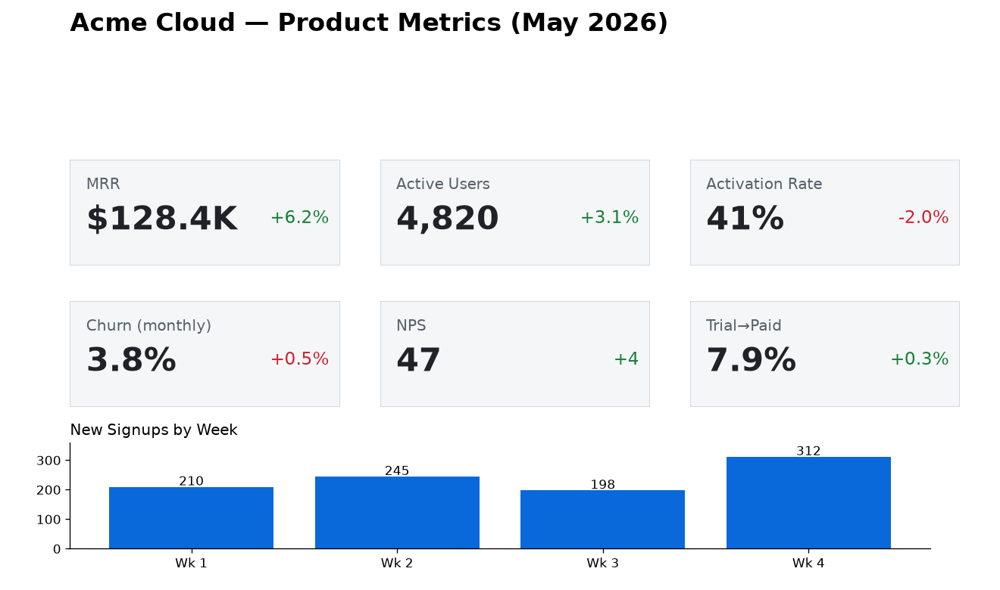

A product manager's hands-on evaluation of Google's brand-new Gemma 4 12B against the cloud model I use daily, Claude Opus 4.8 — across writing, orchestration, coding, summarizing, and image / audio / video. Free, private, offline. No prior local-model experience.
A 12B open model on a laptop handled the large majority of everyday PM work at a quality I'd genuinely ship — including the parts I expected to fail: reading a KPI dashboard, transcribing and diarizing audio, and summarizing a video. The real cost isn't quality — it's latency (30–90s on heavy tasks) and the need to verify code and extracted facts.
Per category: is local Gemma 4 12B good enough to use instead of Opus? Use local With caveats
| Category | Verdict | Why |
|---|---|---|
| Daily workflows emails, notes→actions, RICE | Use local | Nailed structure & tone; even flagged ambiguous task owners. |
| Orchestration multi-step, JSON, tool routing | Use local | Clean JSON-schema adherence; sensible tool calls. Validate JSON in prod. |
| Light coding Python, SQL, refactor, regex | With caveats | Correct & idiomatic for snippets (nailed an O(n²)→fix). Verify before running. |
| Summarizing PRD, threads, transcripts | Use local | Best category — accurate, cited section IDs, found a real gap. 256K context. |
| Vision dashboards, charts, OCR | Use local | Read exact KPI values; chart→table with correct total; near-perfect OCR. |
| Audio ⭐ transcribe, diarize | Use local | The surprise: accurate transcription + Speaker A/B diarization, on-device, ~20–35s. |
| Video screen-demo summary | With caveats | Great on slide-style content (frames + audio); motion lost at 1 FPS; slowest. |
Generation speed (tokens/sec) — text is snappy; multimodal pays a tax.
Latency ranged 18–92s depending on output length and modality. On an M4 Max with 64 GB, the 7.6 GB model loads in seconds and never touched the network.
One vision task: "read this KPI dashboard and tell me the most concerning number." Gemma reported all six KPIs with exact values and trends, correctly singled out the Activation Rate (41%, −2.0%), and recommended an onboarding-funnel audit.

Same prompt, same input, both models. 🟰 tie · 🔵 Opus better · 🟢 local good enough
| Task | Gemma 4 12B (local) | Verdict |
|---|---|---|
| Stakeholder email | Scannable, all points, clear ask (30s) | 🟰 / 🟢 |
| Plan → JSON → risks | Valid JSON + plan + risks (72s) | 🔵 Opus more specific |
| Python CSV + chart | Runnable, correct top-3 (57s) | 🟰 verify either |
| Summarize long PRD | Cited section IDs, found missing spec (72s) | 🟰 parity |
| Read dashboard | All 6 KPIs exact (92s) | 🔵 Opus faster + 1 extra catch |
| Voice memo → actions | Native transcription + actions (35s) | 🟢 local win |
| Summarize demo video | All 5 slides from frames+audio (53s) | 🟢 local win |
Quality parity on 4 of 7. Opus's edge is speed and the last 10%. Gemma's edge is structural: native audio & video, on-device, for free.
The full workbench — code, the 22-task prompt pack, synthetic inputs, raw outputs, scores, and the head-to-head — is open source. Setup takes ~30 minutes and every test input is fabricated, so nothing sensitive is involved.
Stack: Ollama + Gradio + ffmpeg, all local. Key
gotcha for builders: native audio/video go through Ollama's OpenAI-compatible
/v1 endpoint with input_audio, not the native
/api/chat field.